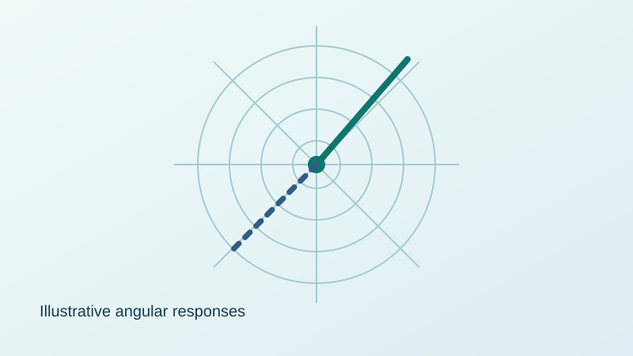

Direction-of-Arrival Estimation
Exploring estimation of signal arrival direction using frequency-dependent antenna responses.

Illustrative angular-response graphic — not project measurements. Replace this graphic with your own figure before using the site as evidence of results.
The challenge
Determining signal direction from measured responses requires suitable models and reliable numerical estimation.
What I worked on
Investigated direction-of-arrival estimation using frequency-diverse antenna response information and signal-processing methods. Developed and analysed estimation workflows.
Results and visuals
Replace this illustration with a direction-estimation plot, error comparison, or system diagram from your project.
assets folder and change the image path above. Add your actual findings here, with units and conditions.Key takeaway
Applying mathematical modelling and numerical estimation to communication-system problems.
Publication or further reading
Add a DOI, publication link, poster, or PDF if you have permission to share it. No source code is required.